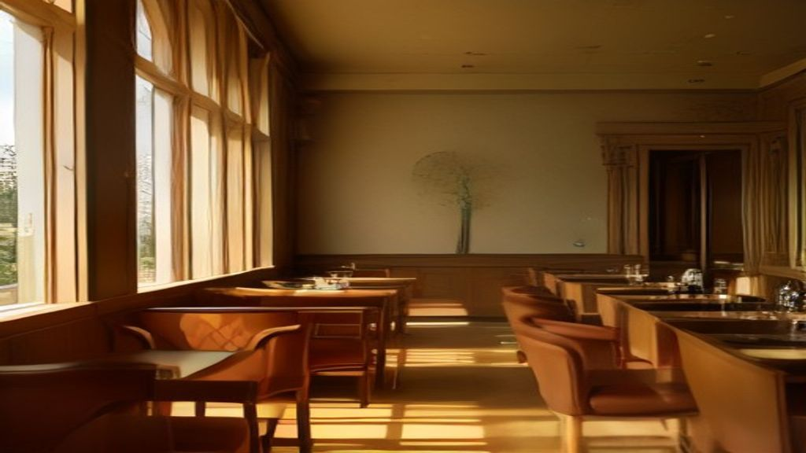

Smart Experience: rivoluziona il tuo menu Horeca nel 2026 con un E-menu AI interattivo

Smart Experience / Taste Engine: La Soluzione Innovativa per Ristoratori, Chef e Titolari Horeca che Vogliono Rivoluzionare il Menu 2026
- Problema diffuso dei menu PDF sgranati, difficili da consultare via smartphone e senza storytelling.
- Il personale di sala è sovraccarico e non sempre può spiegare dettagli, allergeni e abbinamenti, compromettendo l’esperienza cliente.
- Smart Experience / Taste Engine integra un E-menu AI interattivo con maître virtuale, abbinamenti vini personalizzati e schede emozionali per potenziare le vendite senza abbonamenti ricorrenti.
Analisi Approfondita: Problematiche Attuali nel Settore Horeca e Implicazioni Operative
Il mondo della ristorazione sta vivendo una trasformazione digitale impellente, ma molti locali e attività Horeca faticano ancora ad abbandonare soluzioni tradizionali e ormai superate. Il classico menu in PDF, spesso scaricato da un QR code, rappresenta una delle principali criticità: immagini sgranate, testi piccoli e layout non ottimizzati per la fruizione da smartphone creano un’esperienza frustrante per il cliente, il quale fatica a leggere e orientarsi tra le opzioni.
Questa situazione è amplificata dalla necessità del personale di sala di dedicarsi a molte attività contemporaneamente. Camerieri e chef sono spesso troppo occupati per fornire spiegazioni esaustive su ingredienti, allergeni, o abbinamenti enogastronomici, lasciando il cliente insoddisfatto o incerto nelle scelte. Viene di fatto meno quella narrazione emozionale delle materie prime e delle preparazioni, elemento differenziante fondamentale per le attività di qualità.
Inoltre, l’assenza di uno strumento digitale innovativo limita drasticamente la capacità di personalizzare l’esperienza del cliente, che oggi richiede interattività, consigli su misura e un’interazione rapida e semplice alla portata di un click.
Conseguenze e Costi di Non Innovare: Perché Continuare a Usare Menu PDF Fissi Danneggia il Business
Ignorare queste problematiche implica un elevato costo di opportunità: con menu poco leggibili e una gestione del cliente poco interattiva, si genera insoddisfazione che può tradursi in:
- Maggiore abbandono del tavolo o ordini ridotti per incertezza.
- Incremento delle chiamate prolungate ai camerieri, aumentando i tempi di servizio e il rischio di errori.
- Perdita di chance di upselling con vini o piatti abbinati, data la mancanza di suggerimenti proattivi.
- Minore fidelizzazione e un impatto negativo sul passaparola digitale e offline.
Inoltre, mancando la possibilità di raccontare la storia delle materie prime, il ristorante perde un importante strumento di branding che crea legami emotivi con il cliente, elemento sempre più valutato dal consumatore moderno e attento alla qualità e sostenibilità.
Come Smart Experience / Taste Engine di RM Studio Cambia le Regole del Gioco
Smart Experience / Taste Engine è il SaaS pensato specificamente per ristoratori, chef e titolari di locali Horeca che vogliono superare queste difficoltà con una soluzione tecnologica unica e semplice da implementare. Il cuore dell’offerta è un E-menu digitale interattivo che non si limita a presentare un elenco di piatti, ma diventa un vero e proprio Maître Virtuale AI, stile WhatsApp, con il quale il cliente può dialogare real-time direttamente dal proprio smartphone.
Le funzionalità principali includono:
- E-menu Interattivo con Maître Virtuale AI: Il cliente può porre domande sulle portate, chiedere informazioni su allergeni, scoprire dettagli nutrizionali e ricevere consigli personalizzati, senza coinvolgere direttamente il personale.
- Abbinamento Vini con Sommelier Digitale: La piattaforma suggerisce vini complementari ad ogni piatto grazie a un algoritmo avanzato ispirato al savoir-faire del sommelier, incrementando il valore medio dello scontrino.
- Calcolo Distanza GPS per Ordini Locali: Lo strumento individua la posizione del cliente, permettendo offerte e suggerimenti su misura in base alla località, personalizzando ulteriormente l’esperienza di acquisto.
- Schede Emozionali delle Portate: Ogni piatto viene raccontato attraverso una descrizione coinvolgente che valorizza le materie prime, origine, metodi di produzione e aspetti unici del prodotto, generando attrazione e desiderio.
Queste caratteristiche trasformano il menu da un semplice catalogo in una vera esperienza d’acquisto emozionale, capace di aumentare vendite, fidelizzazione e visibilità online del locale.
| Gestione Tradizionale | Con Smart Experience / Taste Engine |
|---|---|
| Menu PDF statici, spesso poco leggibili da smartphone | E-menu interattivo e ottimizzato per qualsiasi dispositivo |
| Staff impegnato in spiegazioni e gestione ordini | Maître Virtuale AI che supporta il cliente in autonomia |
| Assenza di suggerimenti personalizzati per abbinare vini | Sommelier digitale per consigli su misura e upselling |
| Nessuno storytelling sulle materie prime e la filosofia del locale | Schede emozionali ricche ed evocative per ogni piatto |
| Difficoltà nel personalizzare l’esperienza cliente | Calcolo GPS per offerte e suggerimenti personalizzati |
| Costi ricorrenti di abbonamento e sistemi poco flessibili | Sblocco una tantum a €390 con jingle radiofonico incluso |
FAQ - Domande Frequenti per Ristoratori, Chef e Titolari di Locali
1. Come si integra Smart Experience / Taste Engine nel flusso di lavoro esistente?
Il sistema è stato progettato per essere intuitivo e plug-and-play. Basta caricare il proprio menu e inserire i dettagli delle portate per attivare il Maître Virtuale AI. Non richiede competenze tecniche avanzate e libera il personale da compiti ripetitivi.
2. È possibile aggiornare il menu dinamicamente?
Sì, il SaaS permette aggiornamenti rapidi e continui, inclusi nuovi piatti, modifiche ingredienti e stagionalità, mantenendo sempre il menu fresco e aggiornato senza costi aggiuntivi ricorrenti.
3. Come funziona il supporto e l’assistenza clienti?
RM Studio offre un’assistenza dedicata per la configurazione iniziale e la risoluzione di eventuali problemi, con risposte rapide per garantire un’esperienza senza problemi fin da subito.
Inizia Subito
Sblocco una tantum a €390.00 senza abbonamenti con Jingle radiofonico incluso.
Fonti Ufficiali e Risorse Esterne
Scopri l'Intelligenza Artificiale per la tua attività
Prova le soluzioni B2B di RM Studio e ottimizza le tue vendite.
Scopri Smart Experience / Taste Engine